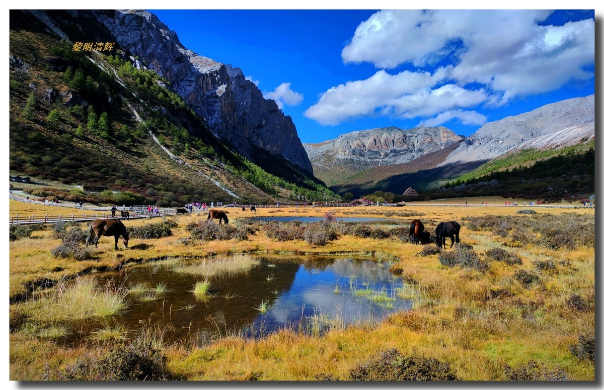
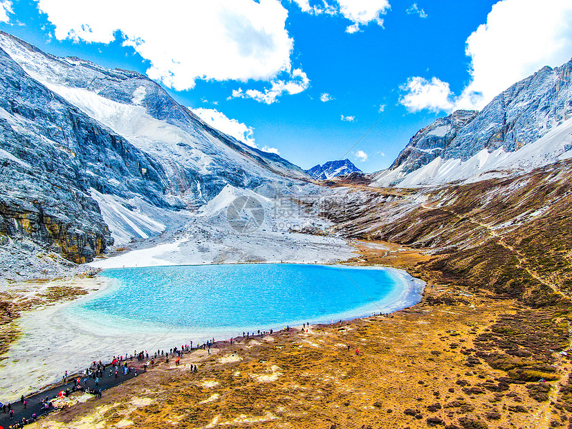
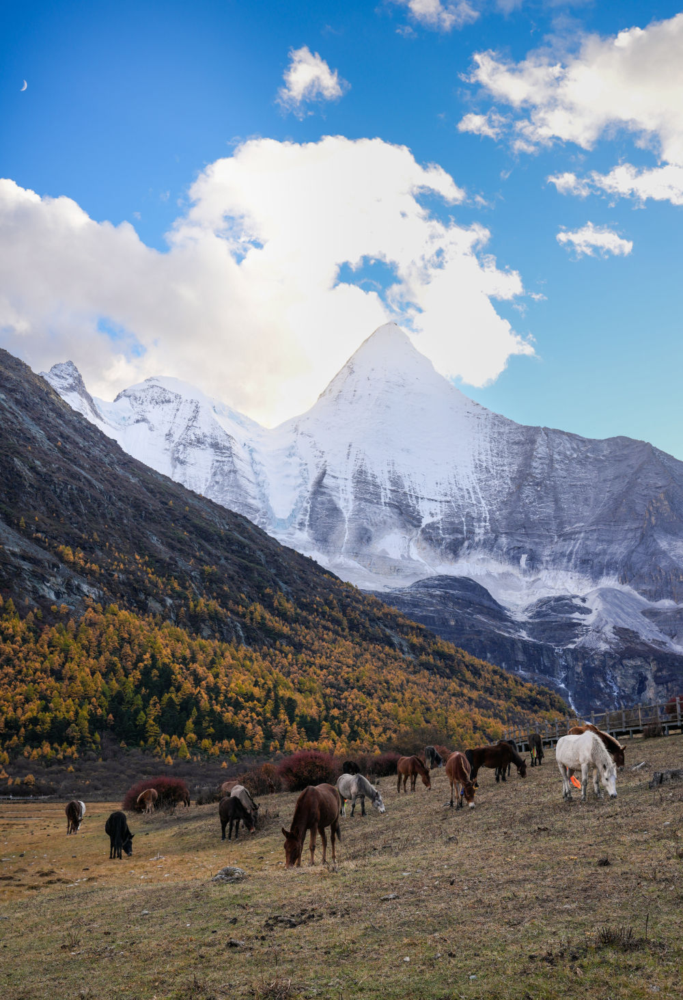

子景点 1 · 海拔 4180m
洛绒牛场与央迈勇雪峰
三座神山怀抱中的高山湿地。贡嘎银河般的冰川溪流在草甸上划出纯美的“S”型回旋，成群牦牛漫步，正前方是如白玉利刃般挺拔的央迈勇雪山。金秋时节草甸全线灿金。
📸 出片机位： 下午 14:00-16:00 顺光，站在木栈道折弯处蹲下，以S型溪流为纵深引导线，央迈勇居中对称构图，大片感扑面而来。

门票自购买起 2 天内有效。如需第 2 天二次进沟，第一天出园检票口前必须在人脸识别机完成面部录入。
| 收费项目 | 收费标准 | 性质 | 说明与决策建议 |
|---|---|---|---|
| 景区大门票 | 旺季 ¥146 / 淡季 ¥73 | 必须购买 | 旺季4月1日-11月30日；淡季12月1日-次年3月31日。学生/老人半价。 |
| 大巴观光车 | ¥120 /人 (往返) | 必须购买 | 游客中心至扎灌崩单程 34km 险峻盘山公路，车程约 50-60 分钟。第2天二次进沟观光车享半价 ¥60。 |
| 内部电瓶摆渡车 | 往返 ¥70~80 / 单程 ¥40 | 强烈建议买 | 扎灌崩/冲古寺至洛绒牛场单程 6.7km。坐车仅需 20 分钟；不坐需徒步 2 小时柏油栈道，会过早耗尽冲顶牛奶海的体能。 |
| 特种马帮骑马 | 往返 ¥305 /人 | 自选限量 | 由当地藏民马帮运营，仅限洛绒牛场至舍身崖路段（每天限量约300匹，早晨8点前排空）。注意：骑马不能直达牛奶海！最后最陡峭的2km乱石悬崖依然必须纯徒步！ |
三座神山怀抱中的高山湿地。贡嘎银河般的冰川溪流在草甸上划出纯美的“S”型回旋，成群牦牛漫步，正前方是如白玉利刃般挺拔的央迈勇雪山。金秋时节草甸全线灿金。

子景点 2 · 海拔 4600m深锁在央迈勇绝壁下的古冰川湖泊。湖边有一圈天然乳白色的矿物质沙环，中心湖水呈现从 Tiffany 蓝到深邃祖母绿的奇幻渐变，在荒凉冷傲的冰碛石堆中如同天使之泪。

子景点 3 · 海拔 4700m亚丁整个常规徒步路线的最高点（4700m）。背靠仙乃日直插云霄的千仞绝壁，湖水在强紫外线下折射出深蓝、墨绿与紫绀交织的光芒，湖畔悬挂着无数翻飞的五彩经幡。
短线精华所在。藏传古刹冲古寺红墙黄檐，坐落在仙乃日神山脚下。步行至珍珠海，雪山倒影在如翡翠般的碧绿湖水中，秋季四周密布金黄的落叶松林，犹如天然油画。